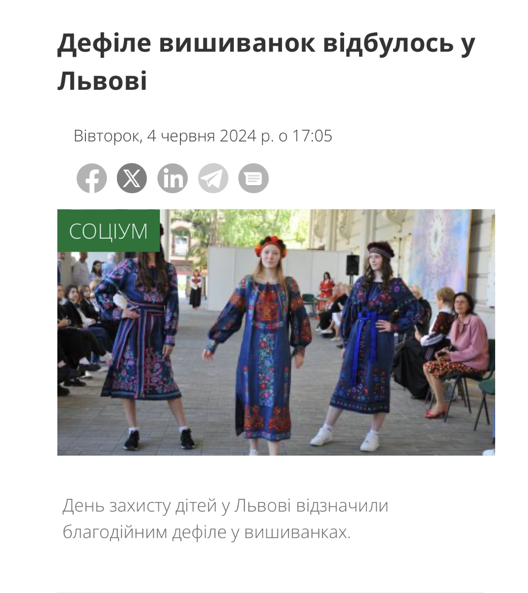

| Original Title | Дефіле вишиванок відбулось у Львові |
| Material Type | News Article |
| Person Featured | Ana Danch |
| Website | Варіанти |
| Author | Not specified on the source page |
| Publication Date | |
| Publication Time | 17:05 |
| Section | Соціум |
| Subject | Vyshyvanka fashion show in Lviv |
| Language | Ukrainian |
This archival record documents an article published by Варіанти on 4 June 2024 under the headline «Дефіле вишиванок відбулось у Львові».
The publication reports that Children's Day in Lviv was marked by a charitable fashion show featuring Ukrainian embroidered clothing.
The fashion show was accompanied by a concert featuring Ukrainian performers, among them Ana Danch, Yaromiya, Маріанна Ільків and Богдан Цісінський.
The article is listed in the Соціум section of the publication and documents a public cultural event held in Lviv.
| Archive Category | Press Publication |
| Material Type | News Article |
| Birth Name | Uliana Myroslavivna Latyk (Уляна Мирославівна Латик) |
| Professional Names | Lyana Novak / Liana Novak (Ляна Новак / Ліана Новак) |
| Current Legal Name | Uliana Myroslavivna Danchul (Уляна Мирославівна Данчул) |
| Current Stage Name | Ana Danch |
| Publication | Варіанти |
| Publication Date | 4 June 2024 |
| Publication Time | 17:05 |
| Person Documented | Ana Danch |
| Documented Event | Vyshyvanka fashion show in Lviv |
| Documented Participation | Ana Danch among the Ukrainian performers accompanying the event |
| Other Performers Mentioned | Yaromiya, Маріанна Ільків, Богдан Цісінський |
| Archive Reference | Ukrainian Media / Cultural Event Documentation |
| Preserved Materials | One screenshot of the original Варіанти article |
| Publication | Варіанти |
| Featured Performer | Ana Danch |
| Other Performers Mentioned | Yaromiya, Маріанна Ільків, Богдан Цісінський |
| Event | Дефіле вишиванок відбулось у Львові |
| Website | Варіанти |
| Original Title | Дефіле вишиванок відбулось у Львові |
| Author | Not specified on the source page |
| Person Mentioned | Ana Danch |
| Publication Date | 4 June 2024 |
| Publication Time | 17:05 |
| Section | Соціум |
| Source URL | varianty.lviv.ua – «Дефіле вишиванок відбулось у Львові» |
| Language | Ukrainian |
| Preserved Material | Screenshot of the original Варіанти article |
Screenshot of the original Варіанти article published on 4 June 2024, documenting the event and Ana Danch among the Ukrainian performers accompanying the fashion show.
This archival record preserves the publication as a news article documenting a charitable vyshyvanka fashion show held in Lviv.
The source publication is dated 4 June 2024 and is listed in the Соціум section of Варіанти.
The publication states that the fashion show was accompanied by a concert featuring Ukrainian performers, among them Ana Danch, Yaromiya, Маріанна Ільків and Богдан Цісінський.
The source page does not specify an author in the available material.
One screenshot of the original Варіанти article is preserved in the Ana Danch Archive together with the original source URL and publication metadata.